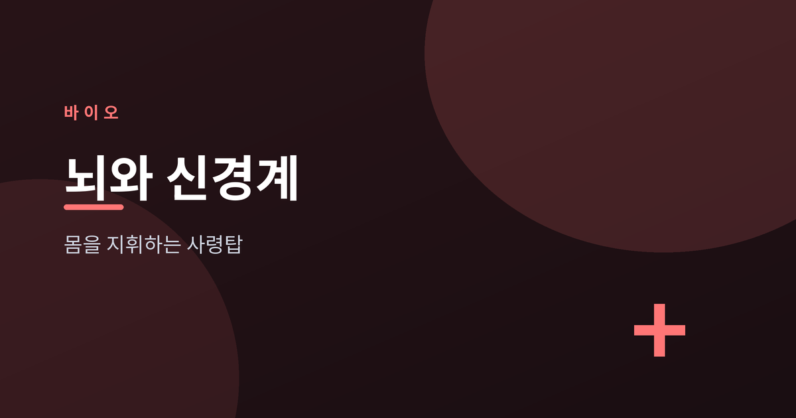
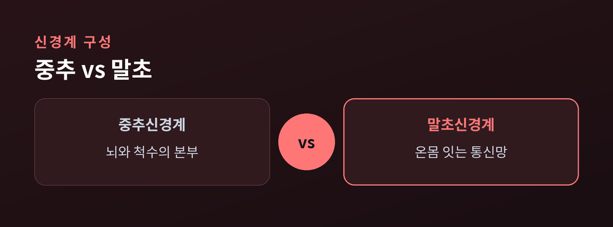
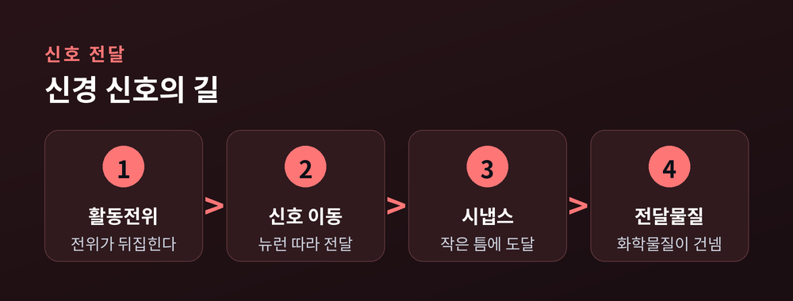
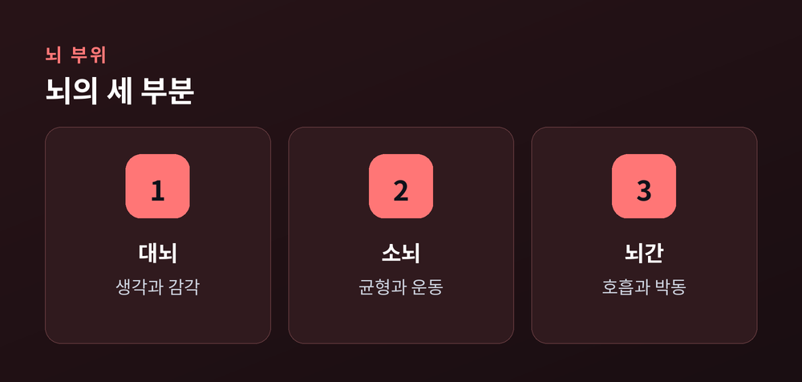
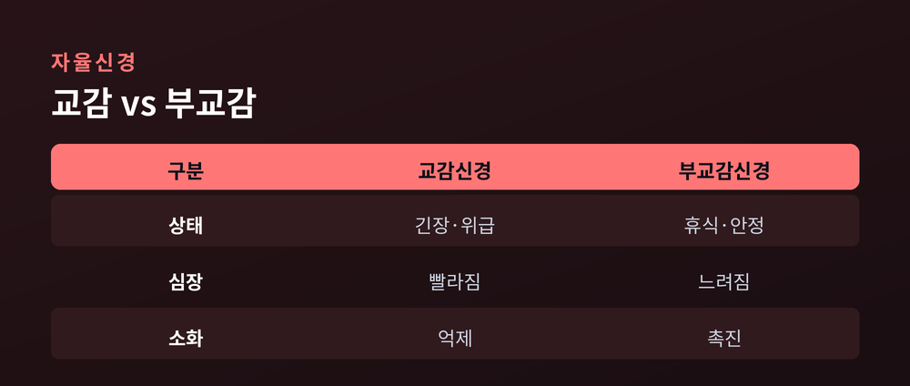

생각과 감각을 만드는 사령탑

이번 글에서는 우리 몸을 지휘하는 신경계를 정리해 보겠습니다. 생각, 감각, 움직임은 모두 이 시스템에서 시작됩니다.
전문 지식이 없어도 읽을 수 있도록 큰 그림부터 차근차근 풀어보려 합니다. 뇌가 어떻게 신호를 주고받는지, 그리고 이 정교한 기관을 어떻게 아껴야 하는지까지 함께 살펴보겠습니다.
신경계는 크게 두 갈래로 나뉩니다. 중추신경계와 말초신경계입니다.
중추신경계는 뇌와 척수로 이루어집니다. 정보를 모으고, 판단하고, 명령을 내리는 본부입니다.
말초신경계는 그 본부와 온몸을 잇는 통신망입니다. 다시 몸의 움직임을 맡는 체성신경과, 내장과 혈관을 조절하는 자율신경으로 나뉩니다.
한쪽이 사령탑이라면, 다른 한쪽은 전국에 뻗은 회선인 셈입니다.

신경계의 기본 단위는 뉴런입니다. 뉴런 하나하나가 전기 신호를 실어 나릅니다.
신호가 뉴런을 따라 흐를 때 막 안팎의 전위가 순간적으로 뒤집힙니다. 이것을 활동전위라고 부릅니다. 신호는 이 파도가 이어지듯 뻗어 나갑니다.
문제는 뉴런과 뉴런 사이입니다. 둘은 붙어 있지 않고 시냅스라는 작은 틈으로 떨어져 있습니다.
이 틈을 건널 때는 전기가 아니라 화학물질이 나섭니다. 신경전달물질이 방출되어 다음 뉴런에 신호를 넘겨줍니다. 전기와 화학이 번갈아 손을 잡는 셈입니다.

뇌는 크게 세 부분으로 볼 수 있습니다. 대뇌, 소뇌, 뇌간입니다.
대뇌는 가장 크고, 생각과 언어와 감각을 맡습니다. 소뇌는 움직임을 정밀하게 다듬고 균형을 잡습니다. 뇌간은 호흡과 심장 박동처럼 생명과 직결된 기능을 조용히 지킵니다.
대뇌의 겉은 여러 엽으로 나뉩니다. 전두엽은 판단과 계획, 두정엽은 감각 통합, 측두엽은 청각과 기억, 후두엽은 시각을 담당합니다.
한 부위가 모든 일을 하지는 않습니다. 여러 영역이 협력해 하나의 경험을 만들어 냅니다.

자율신경은 우리가 의식하지 않아도 몸을 조율합니다. 심장, 소화, 호흡이 모두 그 영향 아래 있습니다.
이 계통은 교감신경과 부교감신경으로 나뉩니다. 둘은 서로 반대 방향으로 몸을 밀고 당깁니다.
교감신경은 긴장하거나 위급할 때 몸을 깨웁니다. 심장이 빨라지고 근육에 힘이 몰립니다. 부교감신경은 반대로 몸을 가라앉힙니다. 소화를 돕고 휴식을 준비합니다.
예전에는 이 균형을 당연하게 여겼습니다. 지금은 그 균형이 건강의 바탕임을 압니다.

뇌는 한번 굳으면 끝나는 기관이 아닙니다. 쓰는 대로 회로를 다시 짭니다. 이 성질을 신경 가소성이라고 합니다.
새로운 것을 배우면 뉴런 사이의 연결이 강해집니다. 반대로 오래 쓰지 않는 회로는 서서히 옅어집니다.
덕분에 우리는 나이가 들어도 배우고 회복할 수 있습니다. 다만 변화는 하루아침에 오지 않습니다. 꾸준한 반복이 있어야 회로가 자리를 잡습니다.
거창한 방법이 필요하지는 않습니다. 기본을 지키는 것이 가장 확실합니다.
첫째, 잠을 충분히 자야 합니다. 수면 중에 뇌는 낮에 쌓인 노폐물을 정리하고 기억을 다집니다. 둘째, 규칙적으로 몸을 움직이시길 권합니다. 운동은 뇌로 가는 혈류를 늘립니다.
셋째, 새로운 자극을 꾸준히 주면 좋겠습니다. 낯선 책, 낯선 길, 낯선 대화가 모두 회로를 자극합니다. 넷째, 과도한 스트레스는 덜어내야 합니다. 긴장이 길어지면 교감신경이 지나치게 오래 깨어 있습니다.
완벽한 습관을 한 번에 갖출 필요는 없습니다. 작은 것부터 지켜가면 충분합니다.
정리하면 이렇습니다. 신경계는 전기와 화학으로 짜인 정교한 통신망이며, 우리가 쓰는 대로 스스로를 고쳐 씁니다.
"뇌는 완성된 기관이 아니라, 평생 다시 쓰이는 기관입니다."
오늘 잘 자고, 잘 걷고, 새로운 것을 한 가지 배워 보시길 권합니다. 그 작은 선택들이 모여 내일의 뇌를 만듭니다.